- トップ >
- おすすめのパン屋
おすすめのパン屋
私が実際に行った広島のおすすめのパン屋を紹介します。
PANQUE
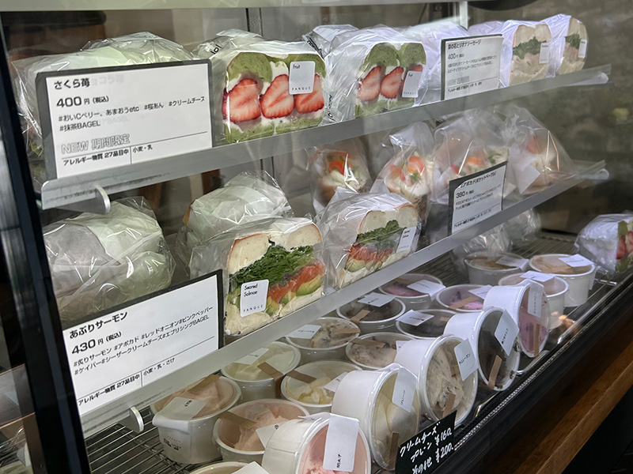
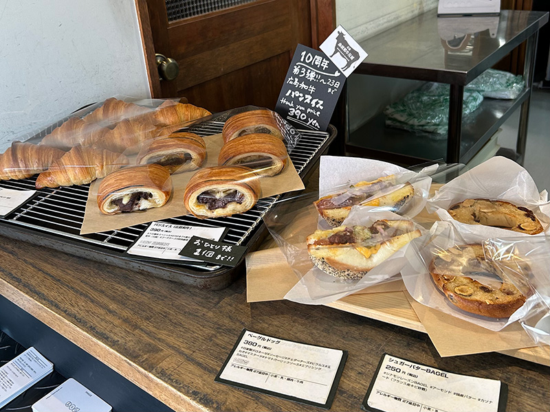
PANQUEは広島のベーグル専門店ですが、実はクロワッサンも美味しいお店です。 サクサクと軽い食感のあとに、しっとりとしたバターの香りが広がり、専門店とは思えない完成度。見た目がかわいいリボンクロワッサンも人気で、私もまだ食べたことがないので次こそ食べてみたいと思っています。 今回は「さくら苺のベーグルサンド」をいただきました。 ボリュームたっぷりなのに甘さはちょうどよく、最後まで飽きずに楽しめる一品でした。 ほかのベーグルサンドもぜひ食べてみたいです。
- 住所(2026.6時点) 広島県広島市西区中広町1-2-1
TORUVE
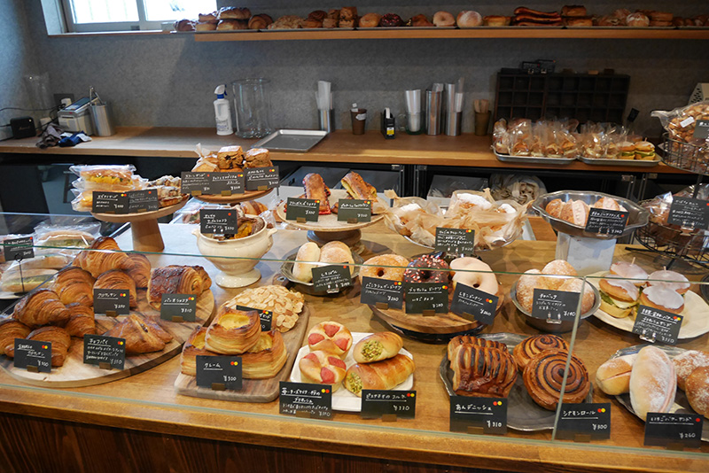
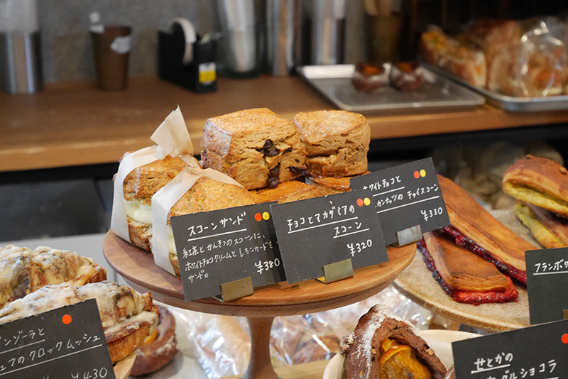
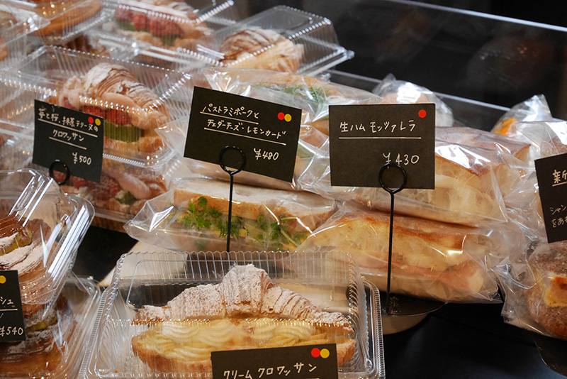
TORUVEは、宇品の静かな住宅街にひっそりとある小さなパン屋さんです。 営業日は週におよそ3日と限られていて、ずっと気になりながらもなかなか行けずにいました。ようやく訪れることができた日は平日でしたが、開店前からすでに人が並んでいて、その人気ぶりに驚きました。 店内には焼き立てのパンが次々と並び、どれも本当に美味しそうで目移りしてしまいます。 パンはセルフではなく、スタッフの方に欲しいものを伝えて取ってもらうスタイルでした。特に、焼き立てのせとかのセーグルショコラはチョコがとろっと溶けていて、とても幸せな味でした。 またぜひ訪れたいです。
- 住所(2026.6時点) 広島県広島市南区宇品海岸2-6-21
Riviere
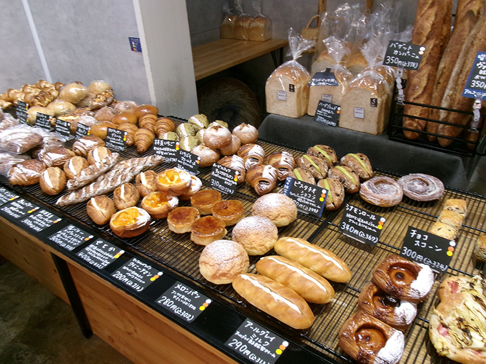
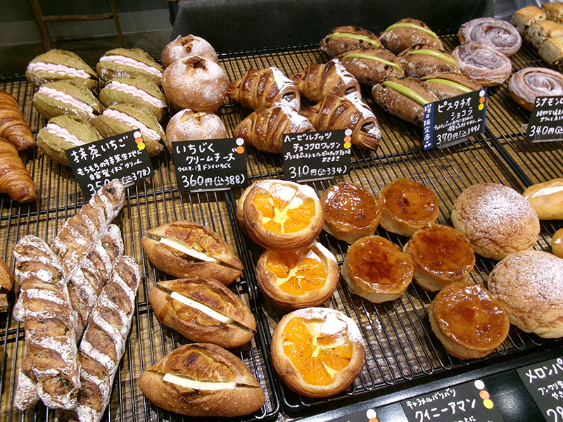

Riviereは、すべてのパンに全粒粉を使っているお店です。パンはなくなり次第終了なので、できれば開店と同時に行くのがおすすめです。私が特に気に入ったのは、お店オリジナルで一番人気の「クロワッサンロワイヤル」です。全粒粉のクロワッサンに糖衣がけがされていて、外はカリッと香ばしく、今までに食べたことのないような食感でした。 何個でも食べたくなるパンでした！
- 住所(2026.6時点) 広島市南区翠5丁目6-26
グラマーペイン
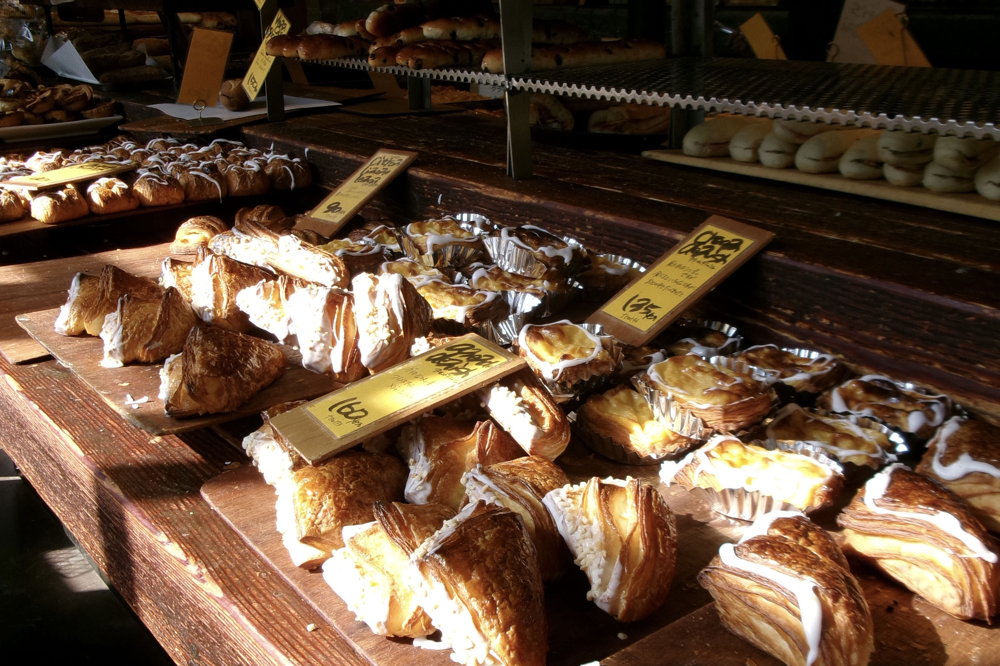
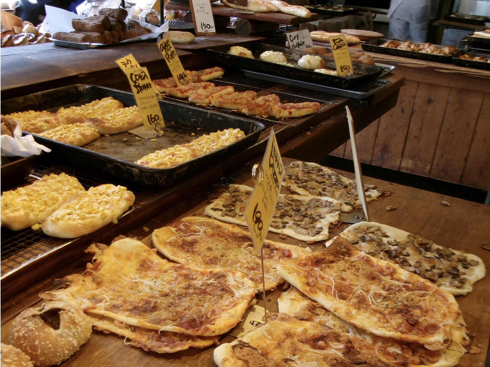
グラマーペインは、佐伯区にある大人気のパン屋さんです。店内は広々としていて、さまざまな種類のパンが並んでいます。総菜パンも甘いパンもどちらも充実していて、何度通っても飽きないほどの品ぞろえです。ドリンクも購入でき、外にはテーブルがあるので、そのまま買ったパンをゆっくり味わって帰ることもできます。ついあれもこれもと手が伸びてしまうので、買いすぎには注意！
- 住所(2026.6時点) 広島県広島市佐伯区八幡東4-31-23
☆番外編_福岡☆マツパン
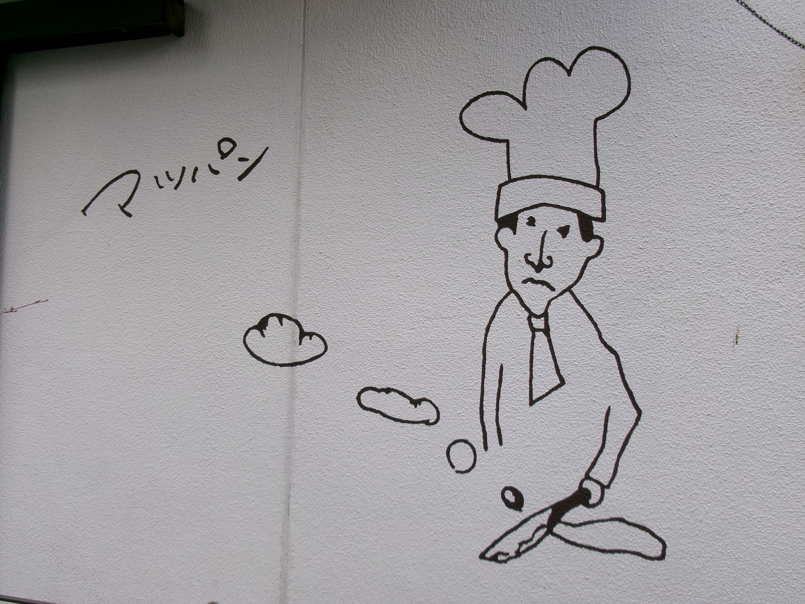
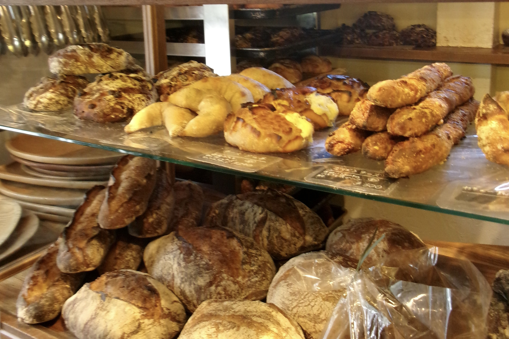
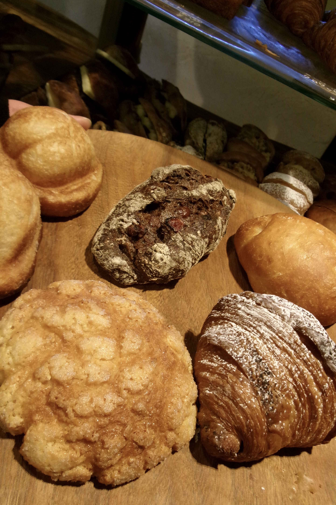
福岡を旅行していたとき、たまたま出会ったのが「マツパン」でした。お店の前には外国の方の姿もあり、観光客にも人気のあるパン屋さんのようでした。“おかわりしたくなるパン”をコンセプトに作られたパンがずらりと並び、種類はなんと約70種類。 どれにしようか迷ってしまうほど魅力的でした。買ったパンはそのまま大濠公園へ持って行き、ベンチに座ってゆっくりいただきました。どのパンも本当に美味しくて、気づけばあっという間に食べ終わってしまいました。 天気のいい公園で、のんびり景色を眺めながら味わうパンは最高でした！
- 住所(2026.6時点) 福岡市中央区六本松4-5-23